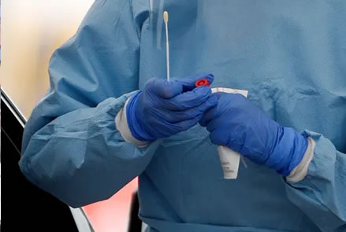

Home
Saiba Mais
Sobre
Contato
Por meio desse site criado exclusivamente com HTML e CSS, conheça as 6 melhores notícias do momento!
Espanha vê ritmo de mortes menor e começa
a afrouxar isolamento contra coronavírus
CLIQUE AQUI PARA LER NA FONTE

Pesquisadores australianos a poucas semanas
de testes clínicos de cura contra o COVID
CLIQUE AQUI PARA LER NA FONTE
Número de mortes por coronavírus no Reino Unido têm queda pelo 4º dia seguido
CLIQUE AQUI PARA LER NA FONTE
Vídeos
New York anuncia que usará hidroxicloroquina para tratar casos graves de coronavírus
CLIQUE AQUI PARA VER NA FONTE
Cerca de cem mil pessoas infectadas pelo coronavírus no mundo estão recuperadas
CLIQUE AQUI PARA VER NA FONTE
Suécia entende que a "imunidade de rebanho" é
a resposta mais adequada para o Coronavírus
CLIQUE AQUI PARA VER NA FONTE